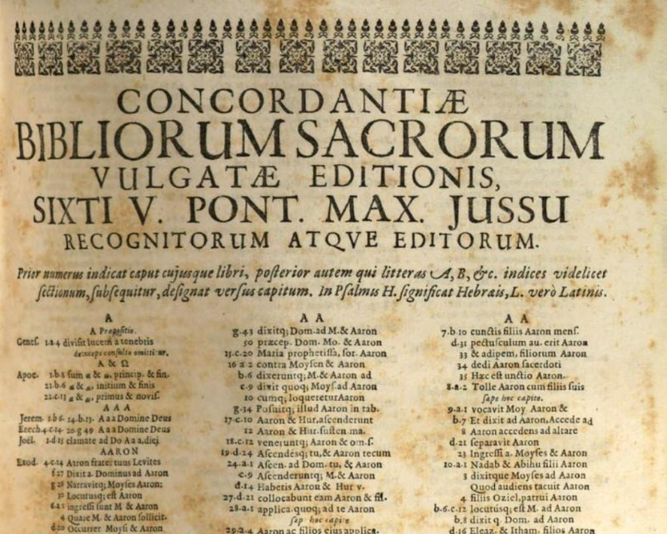
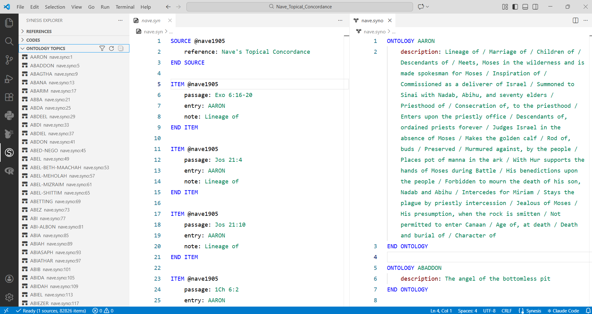
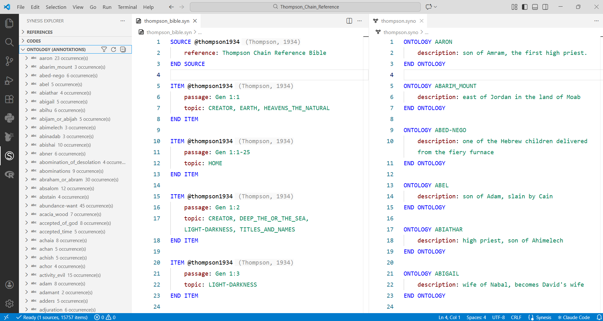

1 Synesis e as Escrituras
A Bíblia é um livro notável. Escrita ao longo de mais de 1.500 anos, por mais de 40 autores vivendo em três continentes (Ásia, África e Europa), em três idiomas (hebraico, aramaico e grego), ela é ao mesmo tempo diversa e profundamente coesa. Um trabalho de catalogação realizado pelo Pastor Christoph Römhild identificou 63.779 referências cruzadas nas Escrituras, resultando na visualização elaborada por Chris Harrison.

1.1 Por que anotar as Escrituras sistematicamente?
Leitores das Escrituras há muito perceberam que determinados temas aparecem repetidamente ao longo dos dois Testamentos. Para navegar essa riqueza temática, desenvolveram-se ferramentas como concordâncias (que listam ocorrências de termos específicos), referências cruzadas (vínculos conceituais entre versículos, ligando pessoas, eventos, lugares e conceitos teológicos) e a teologia sistemática (disciplina que organiza as doutrinas da fé cristã a partir da identificação e agrupamento de passagens relevantes).
Em 1890, o Dr. Frank Charles Thompson, por exemplo, começou a anotar as margens de sua Bíblia, conectando temas em um sistema de referências em cadeia — trabalho que ocupou toda a sua vida e que permanece disponível até hoje na Bíblia de Estudo Thompson.

1.2 O que é Synesis
Synesis é uma linguagem de anotação estruturada para pesquisa qualitativa. Ela permite registrar trechos de fontes — textos, entrevistas, documentos — associando a cada trecho metadados como temas, conceitos e relações. As anotações são armazenadas em um formato legível por humanos e processável por máquina, podendo ser exportadas para bancos de dados, planilhas ou grafos de conhecimento.
No contexto das Escrituras, Synesis funciona como uma concordância programável: em vez de consultar um índice fixo, o pesquisador constrói seu próprio sistema de referências, com os critérios e categorias que desejar. O resultado é um corpus anotado que pode ser consultado, expandido e visualizado de formas que nenhum sistema manual consegue oferecer.
Três características tornam Synesis particularmente adequada para o estudo bíblico sistemático:
- Escala. Um sistema manual como o do Dr. Thompson levou uma vida inteira para ser construído. Com Synesis, o mesmo tipo de estrutura pode ser desenvolvido de forma incremental, colaborativa e verificável.
- Flexibilidade taxonômica. Os temas e categorias são definidos pelo próprio pesquisador, sem vocabulário controlado imposto externamente. É possível trabalhar com categorias da teologia sistemática clássica, com estruturas próprias ou com ambas simultaneamente.
- Interoperabilidade. As anotações podem ser exportadas para diferentes formatos e integradas a outras ferramentas de análise, visualização e pesquisa.
1.2.1 Como replicar o sistema Thompson em Synesis
O sistema de anotação do Dr. Thompson pode ser representado diretamente na linguagem Synesis. O campo temas permite registrar múltiplas palavras-chave por item, separadas por vírgula, funcionando como os elos temáticos das referências em cadeia.
SOURCE @thompson1999
descrição: Bíblia de estudo Thompson com referências em cadeia
END SOURCE
ITEM @thompson1999
passagem: Pv 12.23
citação: "O homem prudente oculta o conhecimento, mas o coração dos tolos proclama a estultícia."
temas: Prudência, Insensatez
END ITEM
ITEM @thompson1999
passagem: Pv 14.15
citação: "O simples dá crédito a toda palavra, mas o prudente atenta para os seus passos."
temas: Credulidade, Prudência, Insensatez
END ITEM
ITEM @thompson1999
passagem: Pv 15.5
citação: "O tolo despreza a discipina de seu pai, mas o que atende à correção mostra prudência."
temas: Valor_da_Reprovação, Desonra_dos_Pais, Prudência, Pessoas_Insensatas
END ITEM 1.3 Uma tradição de séculos
A necessidade de organizar e conectar as Escrituras tematicamente não nasceu com o Dr. Thompson. Ela acompanha a história da hermenêutica cristã desde os primeiros séculos, e produziu ao longo do tempo instrumentos cada vez mais sofisticados.
No século III, Orígenes já produzia suas Hexapla, obra de organização e comparação textual que pressupunha um trabalho sistemático de identificação de paralelos e variantes. Jerônimo, no século IV, e os monges medievais que desenvolveram as Concordantiae — índices alfabéticos de palavras das Escrituras — continuaram essa tradição. A primeira concordância completa da Vulgata latina é atribuída a Hugo de São Caro, no século XIII, produzida com o auxílio de centenas de copistas.

Com a Reforma e a proliferação das traduções vernáculas, novas ferramentas se tornaram necessárias. Em 1550, John Marbeck publicou a primeira concordância completa em inglês. Mas foi nos séculos XIX e XX que o projeto de organização temática das Escrituras atingiu sua maior sofisticação:
Nave’s Topical Bible (1896) — o Rev. Orville James Nave levou 23 anos compilando esta obra durante seu serviço como capelão militar. Organizada por tópicos em vez de por versículos, ela lista mais de 20.000 temas e subtemas com as respectivas passagens, totalizando mais de 100.000 referências.

Thompson Chain-Reference Bible (1908) — o Dr. Frank Charles Thompson desenvolveu um sistema diferente dos anteriores: em vez de obras separadas, integrou as referências diretamente nas margens da Bíblia, organizadas em cadeias temáticas numeradas que conduzem o leitor de versículo em versículo ao longo de todo o cânon.

O que estas obras têm em comum é o problema que tentam resolver: as Escrituras formam uma rede densa de relações temáticas, tipológicas e teológicas que nenhum leitor consegue mapear integralmente de memória. Cada sistema representa uma solução manual para esse problema — e cada um carrega as limitações do suporte em que foi construído. Um livro impresso não pode ser consultado por múltiplos critérios simultaneamente, não pode ser atualizado sem uma nova edição, e não pode ser integrado a outros sistemas de análise.
Synesis parte exatamente desse ponto: a tradição já estabeleceu que o problema vale ser resolvido. O que muda é o meio.
1.3.1 O que fazer com essas anotações
As anotações geradas podem ser exportadas em diferentes formatos e utilizadas para análise temática. É possível, inclusive, gerar visualizações gráficas semelhantes à de Chris Harrison, evidenciando a estrutura de conexões entre as passagens anotadas.
1.4 Um problema comum
É interessante observar que tanto as concordâncias, quanto a codificação qualitativa moderna respondem ao mesmo desafio epistemológico: como extrair padrões de um corpus textual extenso e heterogêneo, preservando a ligação entre o padrão identificado e o texto de origem.
Em ambos os casos, o pesquisador precisa:
- (1) ler o texto,
- (2) identificar unidades de significado,
- (3) atribuir categorias a essas unidades, e
- (4) recuperar posteriormente todos os trechos associados a uma categoria.
A estrutura do processo é idêntica.
A codificação qualitativa e a organização sistemática das Escrituras compartilham uma estrutura profunda comum: identificar unidades de significado em um corpus textual, atribuir categorias e recuperar conexões.
Synesis não aplica métodos de pesquisa a um domínio novo — reconhece uma continuidade que sempre existiu entre essas duas tradições e oferece um instrumento formal para ambas.
2 Concordâncias em linguagem Synesis
O repositório de estudos de caso do projeto contém versões prontas para uso da Thompson Chain-Reference Bible e do Nave’s Topical Concordance em linguagem Synesis — duas das mais importantes obras de referência da hermenêutica cristã, agora em formato interoperável e consultável programaticamente. Ambas as obras estão em domínio público; versões digitais originais podem ser obtidas gratuitamente em Crosswire.org.
2.1 O potencial da linguagem Synesis para a teologia
A pergunta relevante não é técnica — é sobre o que o formato torna possível pensar.
2.1.1 Convergência de fontes heterogêneas
O Nave’s e o Thompson nasceram como projetos paralelos, desenvolvidos por autores diferentes, com estruturas diferentes, em décadas diferentes. Em texto impresso, não era tão simples perguntar: quais versículos o Nave’s e o Thompson concordam sobre Fé? — porque as fontes estavam em silos diferentes.
Em Synesis, ambas as obras podem ser adaptadas para compartilhar o mesmo modelo de dados. Assim, uma consulta como essa se torna trivial.
2.1.2 O campo chain como ferramenta de teologia sistemática
A teologia sistemática trabalha com relações entre conceitos doutrinários — e Synesis tem primitivas formais para representá-las:
SOURCE @teologia_sistematica2026
descricao: "Relações doutrinárias fundamentais"
END SOURCE
ITEM @teologia_sistematica2026
memo: Relação entre graça, fé e justificação na soteriologia paulina
chain: Graca -> PRODUZ -> Fe -> PRODUZ -> Justificacao
END ITEM
ITEM @teologia_sistematica2026
memo: Tensão estrutural entre os paradigmas da Lei e do Evangelho
chain: Lei -> CONTRASTA_COM -> Evangelho
END ITEMSynesis é uma ferramenta única ao oferecer um modelo de dados capaz de expressar encadeamento relacional entre conceitos teológicos com essa precisão e facilidade de anotação, com dados abertos e rastreáveis.
2.1.3 Vocabulário teológico controlado
As ontologias permitem construir um thesaurus teológico estruturado, com navegação hierárquica por área da teologia:
ONTOLOGY Justificacao
descricao: "Ato pelo qual Deus declara o pecador justo com base na obra de Cristo"
grupo: Soteriologia
END ONTOLOGY
ONTOLOGY Santificacao
descricao: "Processo progressivo de conformação à imagem de Cristo"
grupo: Soteriologia
END ONTOLOGYIsso permite perguntas que sistemas de indexação bíblica nunca ofereceram de forma estruturada: mostre todos os conceitos mapeados em Soteriologia, ou quais passagens do Nave’s tratam de conceitos desse grupo?
2.1.4 Tensões doutrinárias como dados comparáveis
O potencial mais significativo está na modelagem de divergências interpretativas. Diferentes tradições teológicas atribuem sentidos distintos aos mesmos textos. Com Synesis, isso pode ser representado explicitamente:
SOURCE @calvino_institutes
descricao: "Institutas da Religião Cristã, João Calvino"
END SOURCE
ITEM @calvino_institutes
quote: "Jo 6:37 — Tudo o que o Pai me dá virá a mim"
memo: Prova da soberania divina na eleição incondicional
chain: Soberania_Divina -> PRODUZ -> Eleicao_Incondicional
END ITEM
SOURCE @arminius_works
descricao: "Obras Completas, Jacó Armínio"
END SOURCE
ITEM @arminius_works
quote: "Jo 6:37 — Tudo o que o Pai me dá virá a mim"
memo: A eleição é fundada no preconhecimento divino da fé futura
chain: Preconhecimento_Divino -> PRODUZ -> Eleicao_Condicional
END ITEMA mesma passagem, dois sistemas teológicos, dados estruturados e comparáveis.
Synesis não transforma o texto sagrado em dado — transforma o trabalho humano inspirado de interpretação em dado. O Thompson e o Nave são a camada de indexação. O que se constrói acima — comentários, relações doutrinárias, tradições interpretativas — é onde a linguagem revela seu potencial pleno.